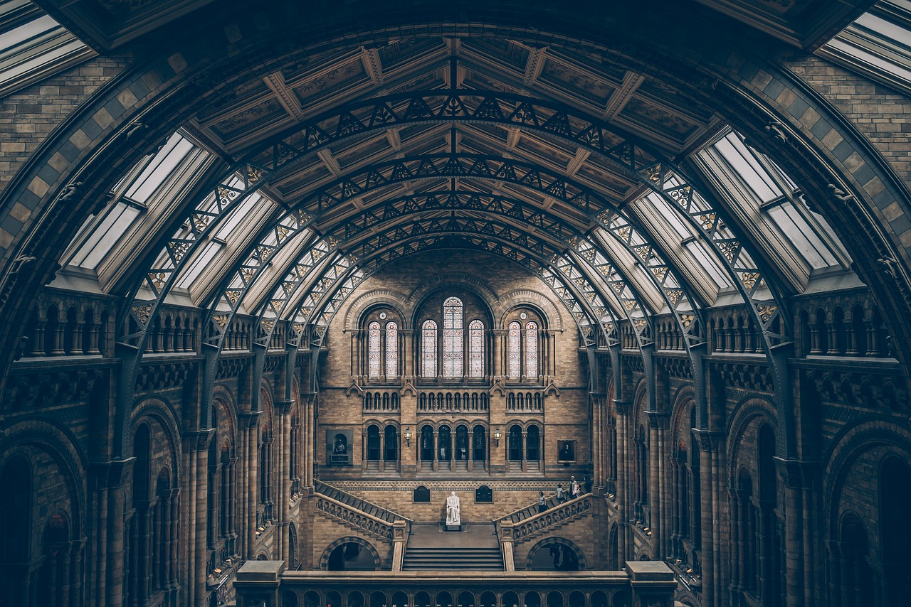

Notícies
L'Arxipèlag de Tesseris acull la primera Biennal d'Art Subaquàtic
L'Arxipèlag de Tesseris, un conjunt d'illes flotants a mig camí entre la terra i el cel, ha acollit la seva primera Biennal d'Art Subaquàtic. Els artistes han utilitzat la transparència de les aigües cristal·lines per crear instal·lacions que només són visibles des de les profunditats del mar. L'esdeveniment ha estat un gran èxit, amb obres d'art que combinen escultura, pintura i tecnologia immersiva, reflectint les realitats subaquàtiques d'aquest paradís artístic.

L'Acadèmia d'Arts de Zorlìria celebra el seu 50è aniversari amb una gran exposició de vídeoart
L'Acadèmia d'Arts de Zorlìria, situada en una ciutat flotant sobre un immens llac de color vermell, ha celebrat el seu 50è aniversari amb una gran exposició dedicada al vídeoart. L'exposició, titulada "Imatges de l'Eter", inclou obres de més de 20 artistes internacionals que exploren la relació entre les imatges digitals i les emocions humanes. La ciutat, coneguda per la seva arquitectura futurista, s'ha convertit en un dels centres d'art més importants del món fictici.

El Museu del Cel en les Núvols estrena una col·lecció de pintures etèries
A la ciutat flotant de Celoní, el recentment inaugurat Museu del Cel en les Núvols ha presentat la seva primera gran exposició: "Entre les Núvols". La col·lecció, composta per pintures etèries creades per artistes que treballen amb materials volàtils, explora els límits entre la pintura tradicional i les tècniques digitals que imiten el moviment de les masses de núvols. Els visitants han de pujar en globus aerostàtics per accedir a les sales d'exposició que floten a gran alçada.

El Festival de la Llum de Vespera transforma la ciutat en un espectacle de llums i ombres
Vespera, una ciutat construïda a l'interior d'una muntanya de cristall, ha estat el lloc escollit per la celebració anual del Festival de la Llum. Aquest any, el festival ha sorprès amb una instal·lació monumental que utilitza les parets de la muntanya com a pantalla per projectar jocs de llums i ombres creades per artistes locals. Els espectadors poden caminar a través de túnels de cristall i ser part de l'espectacle, experimentant com la llum transforma l'entorn a mesura que la ciutat es despulla de les seves ombres.